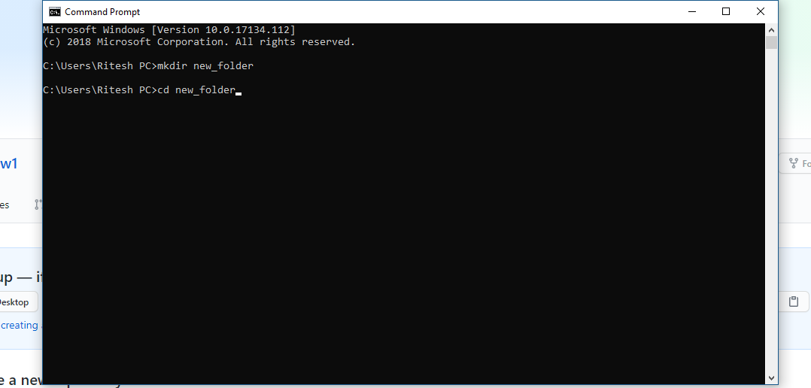
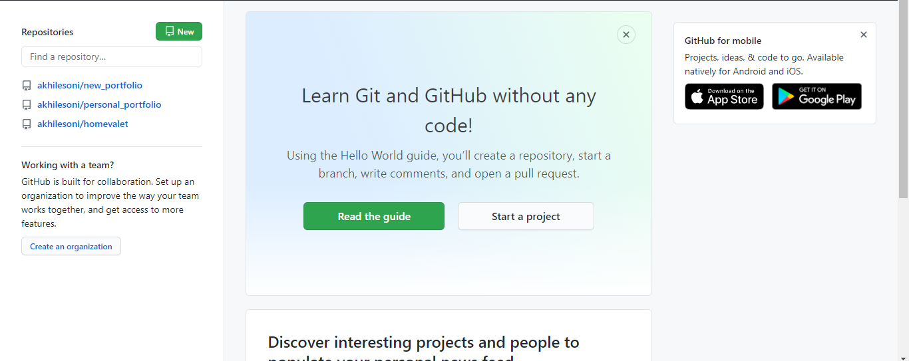
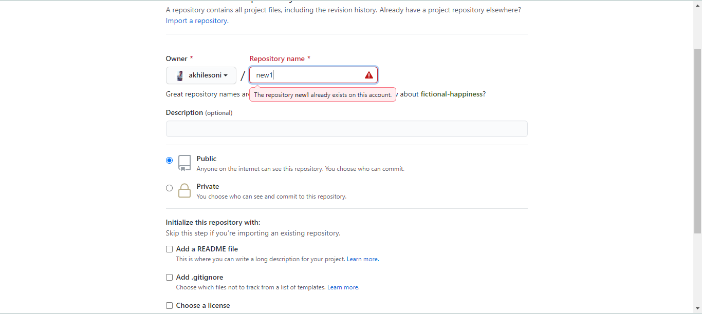
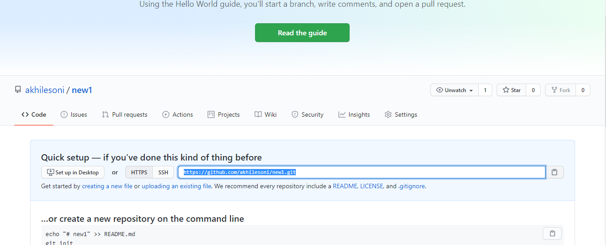
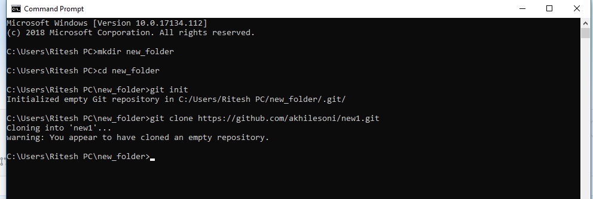
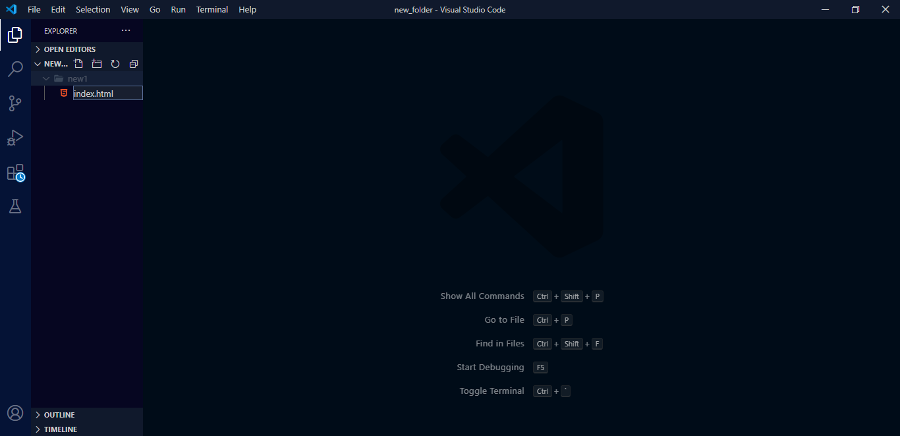
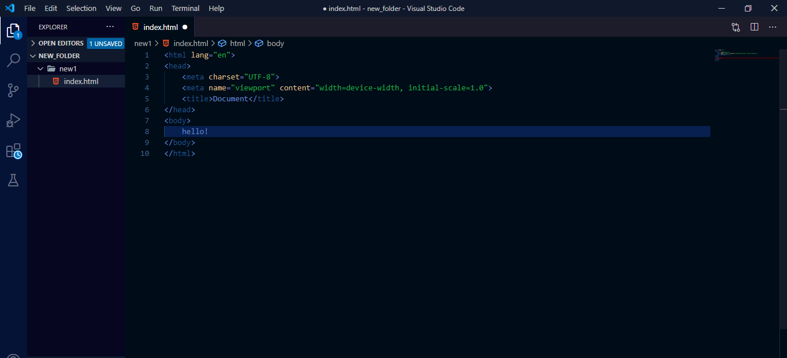
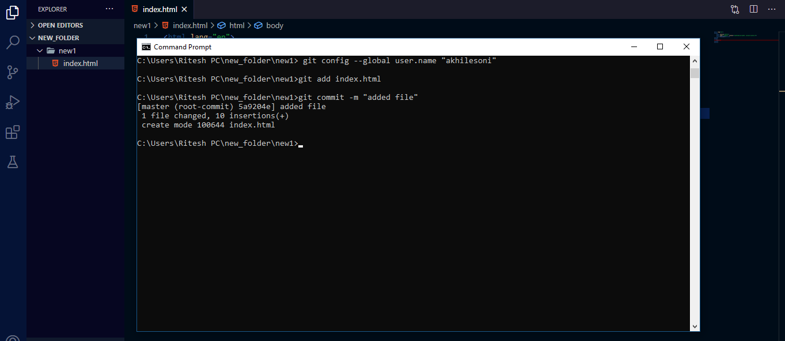

Akhlesh soni
web developer
Git and Github

Git is a Version control software, which was designed to help people to open source and allow them to create repositories.
repositories is kinda folder where we can do some magical stuff like connecting to remote servers, downloading and uploading files from server and taking care of the development cycle of the software.
version control is type of software that helps in the development of the software for keeping track of the the version of the software.
HOW IT WORKS you just need to install this into your computer and you're ready to use it. In this there certain command that you need to know about.
COMMANDS
git init - it's a command that allow us to initiate a repository into a folder. just open your cmd prompt and create a folder where you want to initiate this "mkdir new_folder" "cd new_folder" type these in cmd prompt all these would help us to create a folder and jumping into it. now just type "git init" this command will create a repository and now you are ready to do some magical stuff.
Github
remote repository is a server where you can upload or store your code. github is a remote repository which help developer to have their own personal remote repository, it's allow help them to do open source projects. In technical term github is a server with millions of repositories and we will learn that how to connect with github.
git clone 'url' - when you go into the website of the github you will see new button after clicking it you will going to ask the name type in the name of the repository you want and hit enter. copy the url form that box
 next  next got to cmd prompt and type "git clone 'url' " now you have successfully cloned or connect a remote repository to your repository.
now will see that how to upload the files. open up your IDE and and create a file into that folder for example create a "index.html" file.
wirte some basice code and save it. Now got to cmd prompt and type "git add index.html" . this will add the index.html file into your repository (local) and commit changes like "git commit -m "file added"", commiting is as important as adding file because if you not do that it will not get updated.
now type "git push" this action will push all the commited file to the cloned repository that you have created on the github.
here it is our lovely file... now you can go and checkout the file in the github..

thanks for reading my blog if you like it plaese tell us in